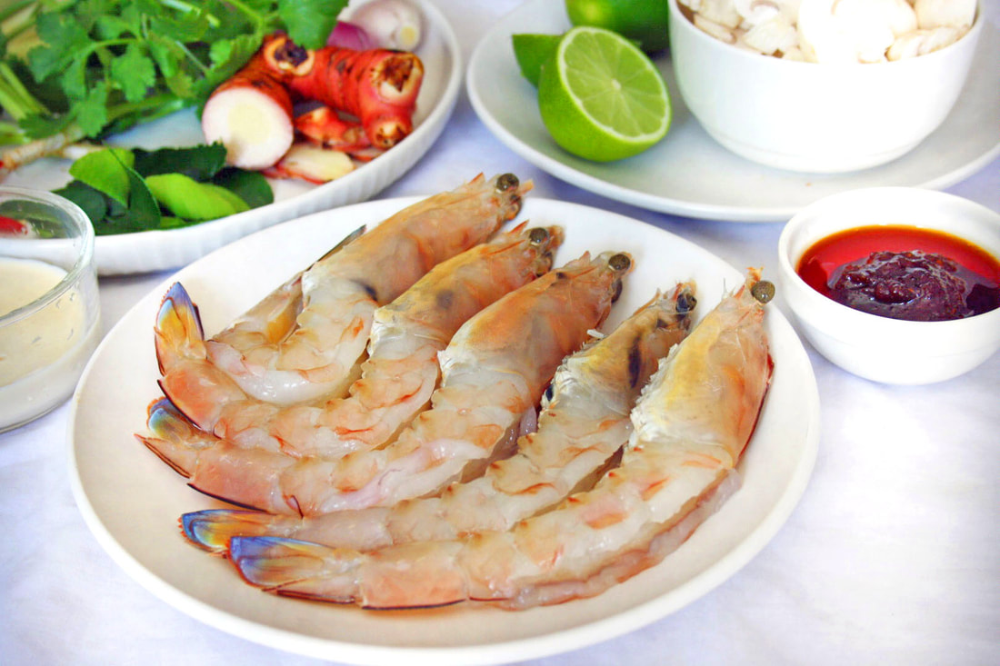

5 Kings Prawns (around 300g) peeled and head on. Reserve the legs and shell for stock
1 lemongrass stalk, smashed and cut into 2 inch pieces
3 shallots, bruised
5 sliced galangal

6 kaffir lime leaves
1 cup of button mushrooms, sliced
2.5 cup of water or stock
1-2 tbsp fish sauce, to taste
4-5 tbsp lime juice, to taste
Pinch of salt
Red chilies such as Bird’s Eye Chilli, cayenne chili, bruised or sliced.
2 tbsp Coriander plus some for garnish
1 tbsp Saw tooth coriander if you can find, I did not use it this time.
1 tbsp Thai chilli jam (nam prik pao) plus its oil
3 tbsp Evaporate milk or coconut milk
1 tsp stock power (optional)
Instructions
In a pot, bring 2 cups of water to boil. Add prawn shell / heads with a pinch of salt. Boil for around 5 mins, and then discard the shrimp shells/heads. Add another ½ cup of water.
Add lemongrass, galangal, and shallots and bring it back to boil.
Add the prawns and remove when cooked. This is a different step from other recipes, and it prevents the prawns from overcooking and the prawn look good when served. If you use smaller prawns and want an easy step add the prawns at the last step.
Add mushroom and season with fish sauce and stock powder.
Add chili and kaffir lime leaves.
Add milk and chilli jam, and when it boils turn the heat off. You can add lime juice in this step but I add it before serving.
In a serving bowl add lime juice and coriander then mix in the soup mix before arranging the prawns in the serving bowl.
Garnish with coriander and chilli. Enjoy your tom yum soup with boiled jasmine rice.